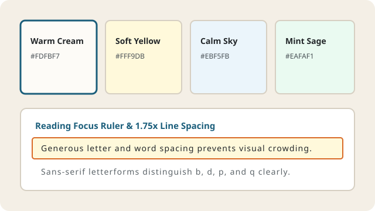

Dyslexia-Friendly Visual Reading Tools & Typography
Preventing Visual Stress, Crowding, and Letter Reversal
Up to 35% of readers with dyslexia experience visual stress (sometimes referred to as Meares-Irlen syndrome) when reading high-contrast black text on bright white screens. Letters may appear to shimmer, blur, or crowd together, making sustained textbook reading exhausting.
LexiLearn applies the typographic and contrast recommendations of the W3C WCAG 2.1 Visual Presentation Standard (Criterion 1.4.8) across every page of our platform.

Calibrated Background Paper Tints (Color Overlays)
Replacing stark `#FFFFFF` backgrounds with soft pastel paper tints reduces screen luminance glare while preserving a contrast ratio above 10:1 against deep charcoal text (`#222629`):
1. Warm Cream (#FDFBF7)
Default LexiLearn Theme: Mimics natural matte book paper to eliminate blue-light glare during long evening study sessions.
2. Soft Amber Tint (#FFF9DB)
Focus & Summary Highlight: Used on simplified output panes to draw visual attention to key takeaways without harsh neon glare.
3. Calm Sky Tint (#EBF5FB)
Cool-Tone Overlay: Preferred by learners who experience red-green wavelength sensitivity and line-skipping on warm backgrounds.
4. Mint Sage Tint (#EAFAF1)
Restful Long-Form Tint: Reduces eye strain when reviewing dense technical tables, code blocks, and biology glossaries.
Five Core Typography Rules Enforced in `css/style.css`
Every text container in LexiLearn is styled using strict CSS rules designed to support rapid letter recognition and smooth horizontal eye tracking:
- Humanist Sans-Serif Fonts (`Verdana`, `Tahoma`, `Segoe UI`): Distinct ascenders and descenders prevent mirror-image confusion between `b/d`, `p/q`, and `I/l/1`.
- Left-Aligned Text Only (Never Justified): Fully justified paragraphs create uneven "rivers of white space" that disrupt dyslexic eye tracking. All LexiLearn text is strictly left-aligned.
- Generous Spacing Metrics: Line height is set to `1.75`, letter spacing to `0.03em`, and word spacing to `0.10em` to eliminate perceptual crowding.
- Controlled Line Width (`max-width: 72ch`): Restricting paragraphs to 60–72 characters per line makes it effortless for the reader's eye to sweep back to the start of the next line.
- Zero Italics for Emphasis: Italicized text slants letters together and slows word recognition; LexiLearn uses bold weights (`font-weight: 700`) and color badges instead.